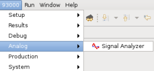
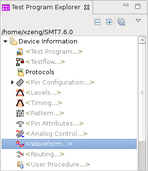
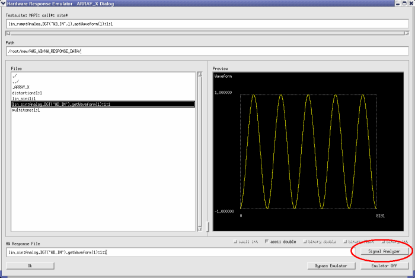

Starting Up Signal Analyzer
There are four methods of starting the Signal Analyzer:
- From the V93000 menu, select .

- From the Test Program Explorer, double-click the item
Waveform.

- From the pattern editor by selecting Edit with Signal Analyzer, for more details, see Editing pattern editor cells with Signal Analyzer.
- From the Hardware Response Emulator ARRAY_X Dialog, click
Signal Analyzer as shown below:

Although it is possible to open more than one Data Display Panel in one Signal Analyzer, it is not possible to run more than one Signal Analyzer at a time within one SmarTest environment.
Editing pattern editor cells with Signal Analyzer
When you select a cell in the pattern editor and click the shortcut menu Edit with Signal Analyzer, the Signal Analyzer is opened and brought to front. The Download Vector Memory dialog will also be opened if a waveform exists and is focused on in the Signal Analyzer. The Download Vector Memory dialog is filled with the values from pattern editor, if the data in pattern editor is not out of date. Otherwise, the dialog is filled with default values.
If you open the Download Vector Memory dialog manually, it will show the previous configured values or default values.